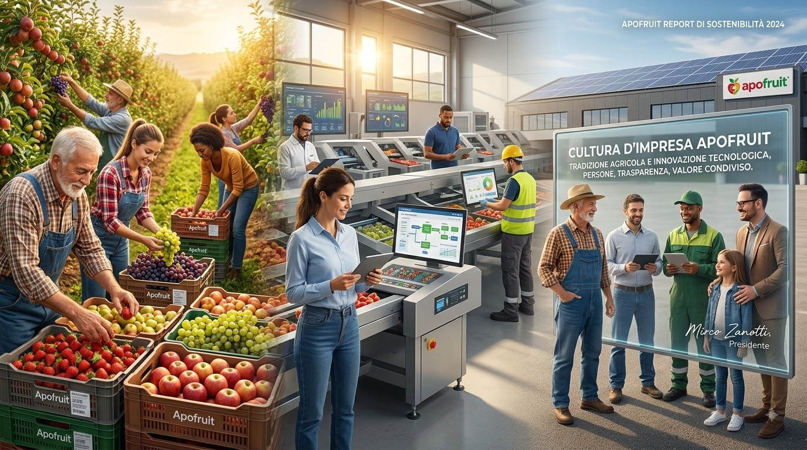

La cultura d'impresa del Gruppo Apofruit
La cultura d'impresa del Gruppo Apofruit (ESRS G1) è radicata e fondata nei valori della cooperazione e della responsabilità sociale. Orientata verso la valorizzazione dei propri soci, dei dipendenti e la salvaguardia dell'ambiente.
Essendo Apofruit una Società Cooperativa Agricola a mutualità prevalente, la sua struttura di governance è progettata per assicurare una gestione altamente democratica. Vige il principio cardine "un socio, un voto", tutelando la trasparenza e i diretti interessi dei soci produttori. I tre principali organi sociali su cui poggia l'architettura della governance sono:
- Cultura d'Impresa: Un impatto positivo connesso alla diffusione di valori di correttezza ed eticità tra i dipendenti e verso il mercato. Un impatto positivo legato alla valorizzazione dei prodotti ortofrutticoli conferiti dai soci cooperatori.
- Impegno Politico e Lobbying : Un impatto positivo legato alla valorizzazione delle relazioni con le realtà politiche e di rappresentanza di settore ai fini dello sviluppo del comparto agricolo.
- Corruzione Attiva e Passiva Un impatto positivo che si esplicita nel contrasto ai reati corruttivi grazie alla predisposizione di sistemi di gestione e di formazione diretta a tutti i livelli Aziendali e alla garanzia nella conduzione di operazioni di finanziamento di sistema a favore dei soci.
L’analisi di materialità non ha rilevato rischi o opportunità materiali per Apofruit per la tematica di condotta delle imprese
Politiche in materia di cultura d’impresa e condotta delle imprese
Apofruit ha sviluppato diverse modalità per promuovere e consolidare la propria etica, coinvolgendo non solo i membri degli organi e il personale con responsabilità operative, ma anche tutti i lavoratori, collaboratori e fornitori.
La Cooperativa ha redatto un Codice Etico e, dal 2008, ha adottato il Modello di Organizzazione e Controllo (MOG) secondo il D.Lgs 231/2001 per garantire una governance trasparente e prevenire reati legati a sicurezza, ambiente, corruzione e diritti umani. Apofruit considera l’etica non solo un obbligo normativo, ma un’opportunità di crescita, supportata da una procedura per la segnalazione di condotte illecite.